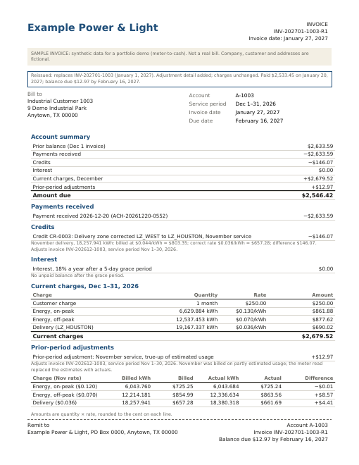

Meter-to-cash demo · Stage 5 of 5: Collection
The short-pay was a question
A-1003 paid $2,533.45 against a $2,546.42 invoice. The $12.97 it held back is exactly the bare “Adjustment” line from invoicing, so this isn't a cash-flow problem; it's a question the invoice never answered. Two other accounts look wrong for different reasons: A-1002 paid on time but shows unpaid because its check was keyed to A-1020, and A-1002's November is still on estimated usage because its meter read came in after the cutoff. Six checks sort out which is which.
January cash
Everything the bank received through January 22, the day after the invoices fell due, matched to an invoice.
| Received | Reference | Payer | Amount | Remittance says | Matched to | Matched by | Result |
|---|---|---|---|---|---|---|---|
| Jan 12 | ACH-20270112-0091 | Residential Customer 1020 | $87.12 | INV-202701-1020 | INV-202701-1020 | Invoice number on remittance | Exact match |
| Jan 15 | CHK-20270115-2204 | Residential Customer 1002 | $109.48 | Account A-1002 | INV-202701-1002 | Account and amount | Exact match |
| Jan 19 | ACH-20270119-0318 | Commercial Customer 1001 | $3,339.13 | INV-202701-1001 | INV-202701-1001 | Invoice number on remittance | Exact match |
| Jan 20 | ACH-20270120-0577 | Industrial Customer 1003 | $2,533.45 | INV-202701-1003 | INV-202701-1003 | Invoice number on remittance | Short-pay, $12.97 |
Which check catches what
| 1. Match | 2. Classify | 3. Vs lines | 4. Pair | 5. Reads | 6. Trace | |
|---|---|---|---|---|---|---|
| Short-pay (A-1003) | Invoice no. | Short-pay | One line | Not flagged | Read matches | Invoicing |
| Misapplied (A-1002 → A-1020) | Account + amount | Exact | — | Paired | — | — |
| Late read (A-1002) | Account + amount | Exact | — | — | Timing gap | — |
Matching and classifying only see the cash. Two of the three problems arrive as exact payments; they turn up when the ledger is compared to the bank, and the invoice to the reads.
1–2Match and classify
Each receipt is matched by the invoice number on the remittance; failing that, by account and amount; failing that, by amount and date. Then it is classified: exact match, short-pay, overpayment, or unapplied cash. Three of the four are exact. A-1002's check carried no invoice number, only “A-1002” on the memo, so it matched on account and amount. The bank knows whose payment it is; the question is whether AR does.
3Short-pay against invoice lines
The shortfall on INV-202701-1003 is $12.97. Of the 8 printed lines, one matches it exactly: the adjustment with no reference.
| Printed line | Section | Amount | Equals the shortfall? |
|---|---|---|---|
| Payment received 2026-12-20 (ACH-20261220-0552) | Payment | −$2,633.59 | |
| Credit CR-0003: Delivery zone corrected LZ_WEST to LZ_HOUSTON, November service | Credit | −$146.07 | |
| Interest, 18% a year after a 5-day grace period | Interest | $0.00 | |
| Customer charge | Current | +$250.00 | |
| Energy, on-peak | Current | +$861.88 | |
| Energy, off-peak | Current | +$877.62 | |
| Delivery (LZ_HOUSTON) | Current | +$690.02 | |
| Adjustment | Adjustment | +$12.97 | Yes |
A shortfall that equals one line points to a dispute of that line. A customer short on cash pays a round number or nothing; a customer who doesn't recognize a charge pays everything else. A dispute is opened the same day, and interest on the $12.97 is suspended while it is open.
4Pair unexpected balances
For each account, what AR has posted against what the bank says was received.
| Account | Invoiced | Posted in AR | Received per bank | Balance as posted | Unexpected |
|---|---|---|---|---|---|
| A-1001 | $3,339.13 | $3,339.13 | $3,339.13 | $0.00 | |
| A-1002 | $109.48 | $0.00 | $109.48 | $109.48 | Unpaid $109.48 |
| A-1003 | $2,546.42 | $2,533.45 | $2,533.45 | $12.97 | |
| A-1020 | $87.12 | $196.60 | $87.12 | −$109.48 | Credit $109.48 |
A-1002 shows $109.48 unpaid that the bank says was received on Jan 15, and A-1020 shows a $109.48 credit posted the same day. Same amount, same date, opposite signs: one payment on the wrong account. The remittance memo said A-1002; it was keyed as A-1020 (transposed digits). A-1020 had already paid its own invoice by autopay, so the credit had no explanation.
The correction reverses the posting and reposts it to A-1002, effective the date the bank received it:
| Posted | Account | Amount | Reference | Note |
|---|---|---|---|---|
| Jan 22 | A-1020 | −$109.48 | CHK-20270115-2204 | Reverse: belongs to A-1002 (transposed digits) |
| Jan 22 | A-1002 | +$109.48 | CHK-20270115-2204 | Repost, effective 2027-01-15 (date received) |
Left alone, the February 1 bill would have charged interest that isn't owed:
| Account | Feb 1 interest as posted | Correct | Difference | Why |
|---|---|---|---|---|
| A-1002 | $0.32 | $0.00 | $0.32 | Cash posted to the wrong account |
| A-1003 | $0.04 | $0.00 | $0.04 | Amount in dispute; no interest while open |
5Invoice against submitted reads
For each account, November's kWh as invoiced so far against the register read as it was submitted, and when it was submitted against the true-up cutoff (Dec 28, 17:00).
| Account | Meter | November on invoices | Invoiced kWh | Read kWh (submitted) | Read | Submitted | Result |
|---|---|---|---|---|---|---|---|
| A-1001 | M1 | Final (true-up applied) | 16,112.055 | 16,112 | AMI | Dec 1, 06:10 | Matches |
| A-1002 | M2 | Estimated (no true-up yet) | 787.057 | 786 | Field verification | Dec 29, 09:14 | Timing gap |
| A-1003 | M3 | Final (true-up applied) | 18,380.318 | 18,380 | AMI | Dec 1, 06:10 | Matches |
A-1002's meter read came in flagged, so a field verification was ordered. The tech confirmed the read December 28 and it was keyed Dec 29, 09:14, after the cutoff. The January 1 true-up ran without it, so November is still billed on estimated usage. Nothing is wrong with either number: the read arrived too late to be picked up. The February 1 invoice carries the true-up (−$0.14).
From the payer's side of a counterparty invoice, every mismatch traced to one of two causes: the data submitted wasn't what we believed we had submitted, or the counterparty didn't pick it up, usually because of timing. When an invoice and your records disagree, check both before deciding which side is wrong. For A-1003 this check does the opposite job: the invoiced kWh match the read, submitted on time, so the disputed charge is right.
6Trace back
The disputed line, followed upstream to where it came from.
- InvoicingINV-202701-1003: “Adjustment” +$12.97, no original invoice, no service period, no quantities.
- BillingTrue-up, November service (prior-period adjustment): +$12.97 on the January 1 statement.
- RatingNovember final minus November initial, on the corrected setup.
Charge Initial kWh Final kWh Initial Final Difference Energy, on-peak 6,043.760 6,043.684 $725.25 $725.24 −$0.01 Energy, off-peak 12,214.181 12,336.634 $854.99 $863.56 +$8.57 Delivery 18,257.941 18,380.318 $657.28 $661.69 +$4.41 True-up +$12.97 - Metering24 estimated intervals on M3, labeled Nov 18, 02:15 to 08:00, interpolated at 125.928 kWh. The meter read says 248.305 kWh: the gap covered an overnight furnace run, and a straight line can't see it. Difference +122.377 kWh.
- SubmissionAMI read submitted Dec 1, 06:10, well before the cutoff; invoiced kWh 18,380.318 against a read of 18,380.
invoice = statement statement = rating rating kWh = metering kWh
The amount started in metering, and that part is the process working: estimate, then true up. The problem started in invoicing, where the true-up lost its reference. The fix goes where the problem began, not where it surfaced: the invoice lookup now includes adjusted invoices, and the invoice is reissued with the reference.
Dispute log
- Dispute
- DSP-0001, A-1003, opened Jan 22
- Disputed line
- INV-202701-1003, “Adjustment”, $12.97
- Customer said
- Paid everything except the $12.97 “Adjustment”; the invoice doesn't say what it is for.
- What was submitted, and when
- AMI register read, 18,380 kWh for November, submitted Dec 1, 06:10
- Calculation cutoff
- Dec 28, 17:00; read was in on time
- Upstream trace
- 24 estimated intervals, +122.377 kWh → true-up +$12.97 → statement → invoice line with no reference
- Finding
- Charge is correct; the invoice left off its reference
- Interest
- Suspended while open
- Resolution
- Reissued as INV-202701-1003-R1 on Jan 27, 2027 with original invoice, service period, and billed vs actual quantities; balance due Feb 16, 2027
- Closed
- Feb 3: Payment ACH-20270203-0129 for $12.97
With the evidence in one place, the dispute is settled in one exchange: here is the invoice it adjusts, the service period, the intervals that were estimated, and the read that replaced them.

INV-202701-1003-R1, reissued Jan 27. Same charges; the adjustment now shows the invoice it adjusts, the service period, and billed vs actual quantities per charge. Payment received is applied, leaving $12.97 due Feb 16.
Invoicing's adjustment-reference check on the reissued invoice: Passes
Aging
| Account | As posted (Jan 22) | After reposting (Jan 31) | After reissue and payment (Feb 28) |
|---|---|---|---|
| A-1001 | $0.00 | $0.00 | $0.00 |
| A-1002 | $109.48, 1–30 days | $0.00 | $0.00 |
| A-1003 | $12.97, 1–30 days (in dispute) | $12.97, 1–30 days (in dispute) | $0.00 |
| A-1020 | −$109.48 credit | $0.00 | $0.00 |
As posted, AR shows two past-due balances and a credit nobody can explain. After reposting, only the disputed $12.97 is open, and it accrues nothing. After the reissue and payment, every account is at zero.
The whole chain
- MeteringA six-hour collector outage on November 18 is filled by interpolation; the initial bill uses the estimate.
- RatingThe final run on actual reads prices the difference.
- BillingThe January 1 statement carries it as a +$12.97 true-up, no interest.
- InvoicingThe lookup misses the adjusted December invoice, and the true-up prints as a bare “Adjustment.”
- CollectionThe customer pays everything else. The shortfall matches the line, the trace finds the cause, the invoice is reissued, and the customer pays.
Outputs
output/cash_application.csv: each receipt, how it matched, and its classification.output/dispute_log.csv: the dispute, with its evidence package.output/read_check.csv: invoiced kWh against submitted reads and the cutoff.output/ar_corrections.csv: the reposting and the payment after reissue.output/aging.csv: aging as posted, after reposting, and after resolution.output/invoices/INV-202701-1003-R1.pdf: the reissued invoice.